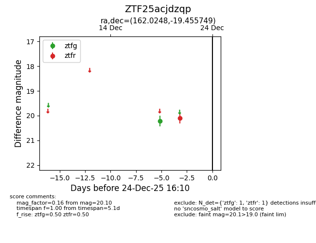
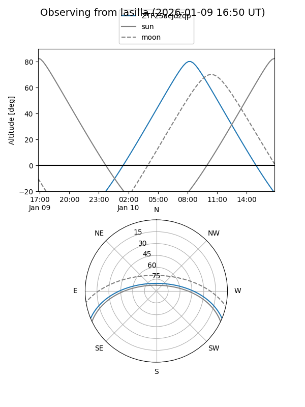
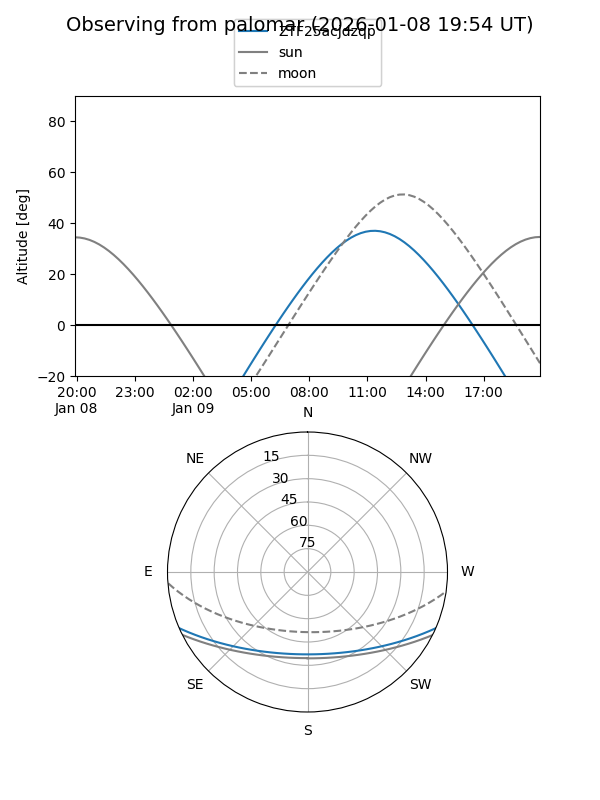

ZTF25acjdzqp
Target ZTF25acjdzqp at 2025-12-24 16:17
Aliases and brokers:
FINK: fink-portal.org/ZTF25acjdzqp
Lasair: lasair-ztf.lsst.ac.uk/objects/ZTF25acjdzqp
ALeRCE: alerce.online/object/ZTF25acjdzqp
alt names
ZTF25acjdzqp (ztf,fink_ztf)
Coordinates:
equatorial (ra, dec) = 162.0248,-19.45575
equatorial (HMS+DMS) = 10:48:05.96,-19:27:20.69
galactic (l, b) = (266.9488,+34.65781)
Flags:
Photometry:
last ztfg=20.22, ztfr=20.10
1 ztfg, 1 ztfr detections
Lightcurve

Visibility


Additional plots